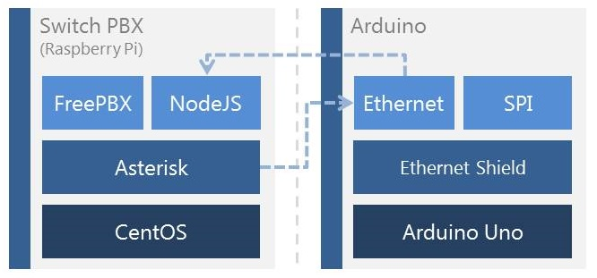

TWRB2 Mark 3
Content
- Introduction
- Objectives
- Requirements
- Arquitecture/Design
- Technical Documentation
- Tutorials
- List of References
- User Documentation
- Tutorials
- List of References
Introduction
Mark 3 adds VoIP telephony making an Arduino capable to generate alarms or be controlled from a local or cellphone.
Objectives
- Control an Arduino from a cellphone or local phone.
- Generate calls to a specific mobile or local phone when sensor is activated.
Requirements
- Asterisk server.
- DID provided by a carrier.
- Arduino Uno.
- Arduino Ethernet Shield.
Arquitecture/Design

Technical Documentation
No information has been added yet.
User Documentation
No information has been added yet.